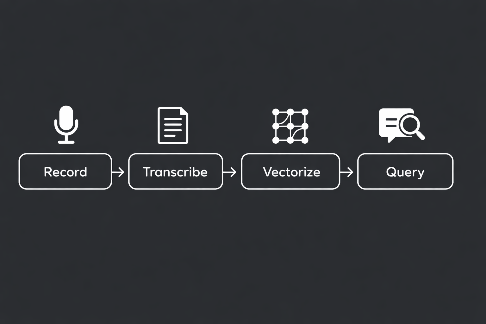

The average professional spends 15 or more hours a week in meetings. Most of what gets said — decisions, context, reasoning, action items — disappears within hours. You take incomplete notes, or no notes at all. A week later, someone asks "what did we decide about X?" and nobody quite remembers.
The problem isn't the meetings themselves. It's that conversations are the highest-density knowledge source in your work, and you're letting them evaporate. Every meeting contains original, first-hand information that doesn't exist anywhere else: the reasoning behind a decision, the nuance in a disagreement, the context that never made it into the Jira ticket.
What if you could capture all of it — automatically — and make it searchable by meaning, not just keywords? That's what building a second brain from your meetings looks like.
TL;DR
- Meetings are knowledge: They contain decisions, context, and reasoning that exist nowhere else
- The pipeline: Record → Transcribe → Vectorize → Query with AI
- Vector search: Find information by meaning, not keywords — "that pricing discussion" actually works
- Compound effect: Value grows exponentially as more meetings accumulate
- Start simple: Record one recurring meeting, build the habit, then expand
The Problem: Your Best Thinking Disappears in Meetings
Think about the last important meeting you had. Can you recall the specific reasoning behind the main decision? The alternative that was rejected, and why? The follow-up that someone volunteered for?
Most people can't. And it's not because the meeting was unmemorable — it's because human memory is fundamentally unsuited for retaining conversational detail. Research on the forgetting curve shows that participants forget 50% of discussed content within 24 hours, and up to 90% within a week.
What's worse, the information lost in meetings is often the most valuable kind. Written documents capture conclusions. Meetings capture the reasoning, the trade-offs, the "we tried X but it didn't work because Y." That context is irreplaceable — and it vanishes every single day.
The cost isn't just forgetfulness. It's the repeated discussions, the re-explained decisions, the new team member who has to piece together months of context from scattered Slack threads. It's institutional knowledge that exists only in people's heads, and walks out the door when they leave. Meanwhile, the tools most teams rely on for meeting capture are becoming a legal liability.
What Is a Second Brain (and Why Meetings Are Its Best Input)
The concept of a "second brain" was popularized by Tiago Forte. It's a personal knowledge management system built on a simple framework called CODE: Capture what resonates, Organize by where you'll use it, Distill to the essentials, and Express by putting it to work.
The core principle is ruthlessly practical: "Knowledge is usable content. If it's not usable, it's not knowledge."
Most people who build a second brain feed it with articles, highlights, bookmarks, and podcast notes — passive consumption from the internet. That's useful, but it misses the richest source sitting right in front of you.
Meetings are different from every other input. They contain original, first-hand knowledge that's unique to your work:
- Decisions and their reasoning — not just "we chose option A" but why, and what was rejected
- Action items with real owners — who committed to what, in their own words
- Context and nuance — the things that never make it into the meeting notes or the Confluence page
- Relationships and dynamics — who knows what, who cares about which topics, who disagrees with whom
- Evolving thinking — how the team's understanding of a problem changes over weeks and months
Yet meetings are the one source almost nobody captures properly. The irony is hard to overstate: you spend hours generating this knowledge, then let it disappear.
The Pipeline: Record, Transcribe, Vectorize, Query
Building a second brain from meetings requires four steps. Each one is straightforward on its own — the power comes from connecting them into an automated pipeline.

Step 1
Record
Capture the audio from your meetings — any platform, any app. The key is making this effortless enough that you do it every time, not just when you remember. Tools like mono capture system audio and microphone simultaneously, so they work across Zoom, Meet, Teams, Discord, or any other app without joining as a visible bot.
Step 2
Transcribe
Turn audio into searchable text. Modern transcription engines like Whisper handle multiple speakers, accents, and technical jargon with high accuracy. The transcript becomes the raw material for everything that follows — a full, faithful record of what was actually said.
Step 3
Vectorize
Embed transcript chunks into a vector database. This is the step that transforms a pile of text files into something genuinely useful. Vectorization converts text into numerical representations that capture meaning — so when you search later, you're searching by concept, not by exact words.
Step 4
Query
Ask natural language questions and get answers grounded in your actual meetings. "What did we decide about the API redesign?" "What's the latest on the hiring timeline?" "Prep me for my 1:1 with Sarah." The AI retrieves the relevant transcript chunks and synthesizes an answer from what was actually discussed.
The result: hours of conversations become an always-available, queryable knowledge base. You don't need to take notes, organize files, or remember where something was discussed. You just ask.
From Raw Transcripts to Actionable Knowledge
A raw transcript is useful, but it's not yet a second brain. The real value comes from what you extract and how you structure it. This is where Forte's concept of progressive summarization applies — layering increasing levels of distillation on top of the source material.
For meeting transcripts, that looks like:
- Layer 1 — Full transcript: The complete record of what was said. Verbose, but complete.
- Layer 2 — Key points: The important moments highlighted — decisions made, questions raised, commitments given.
- Layer 3 — Action items and decisions: Extracted and structured. Who owns what. What was decided and why.
- Layer 4 — Executive summary: A 3-5 sentence overview that captures the meeting's significance in the broader context of the project.
AI can handle most of this automatically. Given a transcript, a language model can extract:
- Decisions made — with the reasoning that led to them
- Action items — with owners and deadlines, in participants' own words
- Open questions — things raised but not resolved
- Follow-up triggers — topics that need revisiting at a specific time or condition
- Person context — updated understanding of each participant's concerns, expertise, and current focus
Forte calls these outputs "intermediate packets" — reusable building blocks that can be recombined for future work. Each meeting doesn't just produce a transcript; it produces a decision log entry, updated action items, refined person profiles, and accumulated project context. These packets feed directly into your second brain, organized not by when you captured them but by where you'll use them.
The Hemingway Bridge: One of Forte's most practical ideas is ending each work session by noting your current status and next steps. Applied to meetings, this means every transcript automatically generates a bridge — here's where we left off, here's what needs to happen next. You never lose the thread between meetings.
Why Vectorization Changes Everything
If you've ever searched your notes for something you know is there and come up empty, you understand the limits of keyword search. You remember the concept, but not the exact words. You know a decision was made about pricing, but the transcript uses the phrase "revenue model" instead.
Vector search solves this. Instead of matching exact strings, it matches meaning. When you embed your transcripts into a vector database, each chunk of text is converted into a numerical representation — a point in a high-dimensional space where similar concepts cluster together.
In practice, this means:
- "That conversation about pricing" finds the discussion about the revenue model, the fee structure debate, and the discount strategy — all in one search
- "What does Alex think about the migration?" surfaces every mention of Alex's position on database migrations, even across multiple meetings, even if Alex used different terms each time
- "Prep me for the board meeting" retrieves every relevant strategic discussion, decision, and metric from the past month — context you'd never assemble manually
But the most powerful feature of vector search isn't individual queries — it's cross-meeting connections. When your database spans dozens or hundreds of meetings, the AI can surface patterns you'd never notice on your own: recurring blockers that keep coming up in different contexts, decisions that contradict earlier ones, priorities that have silently shifted over time.
Your second brain doesn't just store. It connects.
Building Your Own System
The stack for a meeting-based second brain has four components:
| Component | Purpose | Options |
|---|---|---|
| Recording | Capture meeting audio | mono, OBS Studio |
| Transcription | Convert audio to text | Whisper, mono (built-in) |
| Vector database | Store and search by meaning | ChromaDB, Qdrant, Weaviate |
| LLM | Query and synthesize answers | Claude, GPT-4, Llama 3 (local) |
Start simple. Pick one recurring meeting — a weekly standup, a 1:1, a project sync. Record it for a week. Get comfortable with the capture step before building the rest. The habit matters more than the tooling.
Once you have a few transcripts, the vectorization step opens up. Tools like ChromaDB are open-source and can run locally. Embedding models (like those from Sentence Transformers or OpenAI) convert your transcript chunks into vectors. A simple Python script can automate the ingestion pipeline: new transcript appears, gets chunked, embedded, and stored.
For the organization layer, Forte's PARA method works well: organize knowledge by Projects (active efforts with deadlines), Areas (ongoing responsibilities), Resources (topics of interest), and Archive (completed or inactive). The key insight: organize by where you'll use the information, not where you found it.
The compound effect is real. A second brain with 5 meetings in it is a curiosity. With 50 meetings, it starts becoming useful. With 500 meetings across a year, it becomes indispensable — a searchable institutional memory that makes you dramatically more effective in every conversation, every decision, every onboarding.
What Changes When You Have Total Recall
Once your second brain is accumulating meeting knowledge, a few things shift:
You never lose context between meetings. That thread from three weeks ago? Instantly retrievable. The decision from the off-site? Searchable, with the full reasoning attached. You stop being the person who has to ask "can someone remind me what we decided about...?"
Meeting prep takes seconds, not minutes. Before a 1:1, you ask your second brain: "summarize my last three conversations with this person, including open action items." Before a project review, you ask: "what are the unresolved decisions and current blockers?" You walk into every meeting with complete context, effortlessly.
Onboarding becomes instant. Instead of months of "you had to be there" context that new team members slowly absorb, you hand them access to the institutional memory. They can query it like a senior colleague who was in every meeting.
Your knowledge compounds instead of decaying. Every meeting adds to the base. Patterns emerge over time — recurring blockers, shifting priorities, evolving team dynamics. You move from reacting to anticipating, because you have a system that remembers everything and forgets nothing.
The real shift isn't about remembering more. It's about externalizing memory so you can focus on thinking. When you don't have to hold context in your head, you can be fully present in the conversation. The system captures everything in the background; your job is to think, decide, and create.
Disclosure: mono is our product. We've included it in this guide because it handles the recording and transcription steps of the pipeline. We've tried to be fair about the full stack, but you should know we have a stake in it.
Start building your second brain
mono handles the first two steps — recording and transcription — across any meeting app. One recording free, no account needed.